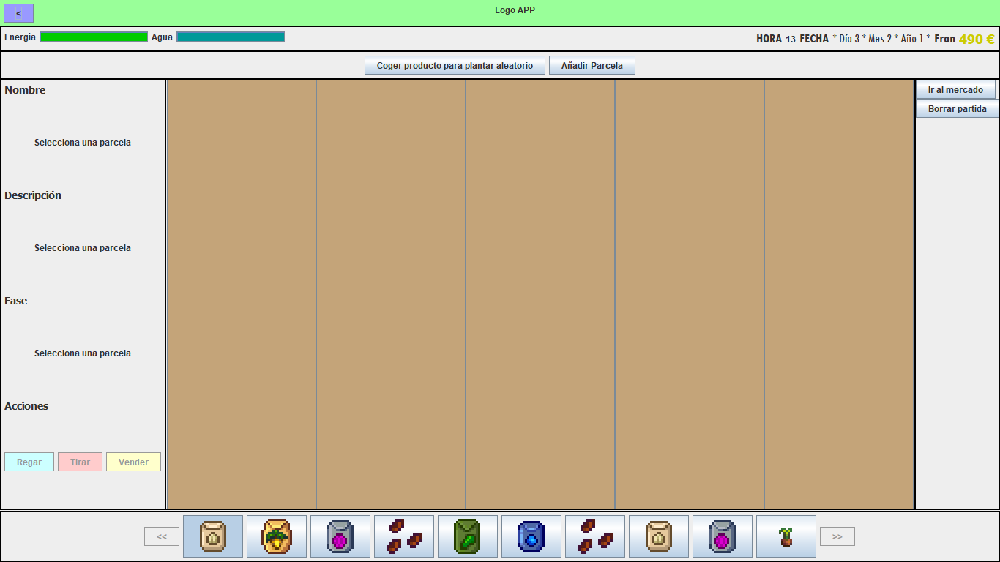

En la interfaz principal del juego, es decir, la del huerto, podrás realizar varias acciones. Si pulsas un producto crecido del todo, podrás venderlo o añadirlo a tu tienda. Si pulsas una parcela con un producto no crecido del todo, podrás regarlo (si no lo has hecho ya). Si pulsas un producto seco, podrás tirarlo.
Además, podrás ir al mercado o borrar tu partida en los botones de la derecha. En la parte de arriba hay dos botones que ayudarán al avance más rápido del juego y a evitar bancarrotas.
